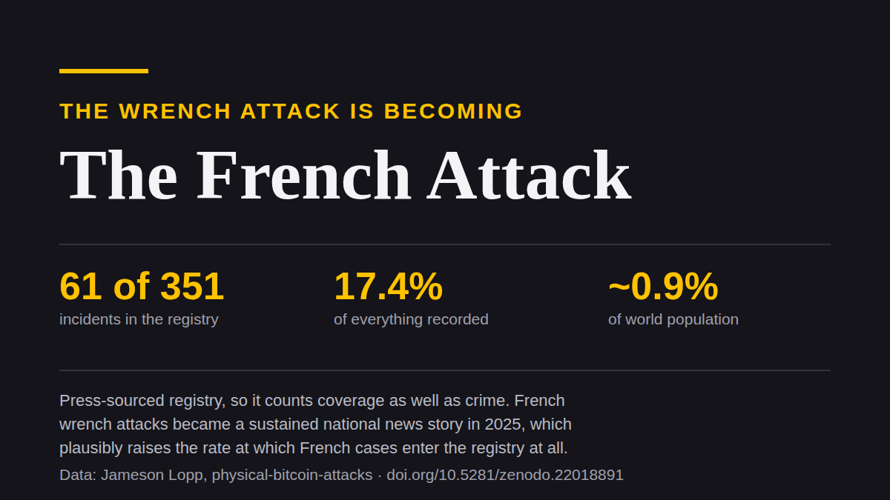

Un mot sur le titre. Wrench attack, l'attaque à la clé à molette, c'est le nom qu'on donne au vol sous contrainte physique ; ça devient French attack. Le jeu de mots reste en anglais parce qu'il ne fonctionne pas en français, et il vise deux choses, deux seulement : l'État, qui tient le fichier, et le registre d'incidents, qui ne recense pas tous les pays de la même façon. Jamais les victimes. Le passage sur la statistique le dit noir sur blanc.
Si vous détenez du bitcoin en France et que vous le déclarez, vous êtes dans un fichier. En juin 2025, une employée de l'administration fiscale a été placée en détention, soupçonnée d'avoir interrogé ce fichier pour le compte du crime organisé. Selon les enquêteurs, les requêtes portaient notamment sur des personnes ayant déclaré des gains en cryptomonnaies.
La France est aussi le pays où l'attaque à la clé à molette est devenue une affaire nationale, et ce texte porte sur le lien entre ces deux faits.
Un fichier, interrogé
Ce que dit l'enquête
Les articles décrivent une agente d'Île-de-France consultant Mira, un système interne du fisc contenant des dossiers sensibles, sans aucune raison professionnelle d'y être. Les résultats, adresses et situations financières, seraient partis vers un intermédiaire lié au crime organisé. Le paiement serait passé par Western Union.
Elle est en détention depuis le 30 juin 2025, mise en cause pour association de malfaiteurs et complicité de violences sur un surveillant pénitentiaire. À une audience, elle aurait reconnu les faits et refusé de dire qui donnait les ordres. La procédure est en cours et rien ici n'est un verdict.
Ce qui devrait vous gêner n'est rien de tout cela.
Comment ça a émergé, et pourquoi c'est le pire
L'affaire est sortie parce que l'une des adresses transmises était celle d'un surveillant pénitentiaire, et que ce surveillant a été violemment agressé. Quelqu'un a tiré ce fil et a trouvé le reste au bout.
Donc le volet crypto n'a pas été découvert par une victime crypto signalant une intrusion, avec un enquêteur qui remonte la piste. Il a été découvert par hasard, à partir d'un autre délit, contre un autre type de cible. Reste une question à laquelle personne ne peut répondre : combien de requêtes n'ont laissé aucun fil à tirer ?
Pas « sans doute beaucoup ». Impossible à savoir. C'est la réponse honnête, et elle est pire qu'un grand chiffre.
La version la plus forte du conseil, prise au sérieux
Quelqu'un finit toujours par dire : très bien, alors ne créez pas le dossier. Achetez sans KYC. Ne déclarez rien. Ne laissez pas de trace.
Ça mérite d'être pris au sérieux plutôt que balayé, parce que comme hygiène personnelle c'est juste. Moins de dossiers vaut mieux que plus de dossiers. Qui n'a jamais figuré dans un fichier a moins de soucis que qui y figure.
Trois choses empêchent que ce soit un mécanisme de sécurité.
L'exposition est un cliquet
La première, c'est que ça ne paie qu'à l'avance.
Un dossier ne se décrée pas. Une fuite ne se rattrape pas. Ce que la plateforme savait de vous en 2019, elle le sait pour toujours, et celui qui a récupéré depuis ce qu'elle savait aussi. Ce que vous avez déclaré est dans Mira.
Du coup le calcul joue contre vous des deux côtés. Rester discret coûte plus cher chaque année : chaque année de détention, chaque contrepartie, chaque service qui réclame maintenant un justificatif. Et ça vaut moins chaque année, parce que votre discrétion ne vaut quelque chose que si personne ne vous a déjà publié.
Vous payez plus chaque année pour une chose qui vaut moins chaque année. Ce n'est pas une défense qui traverse une mauvaise année. C'est une défense qui a un sens de marche.
Un délit, ou un fichier qu'on exploite
La deuxième est plus simple et, pour la plupart des gens, tranche la question.
Là où les plus-values ou les avoirs sont déclarables, « ne laissez pas de trace » n'est pas de la discrétion. C'est de la non-déclaration, et c'est un délit.
Pris au pied de la lettre, le conseil est donc une consigne que le détenteur respectueux de la loi n'a pas le droit de suivre. Vous pouvez être en règle ou vous pouvez être invisible. Choisissez.
Et la consolation habituelle, que la copie de l'État est au moins à l'abri, c'est précisément le sujet de cette affaire. Le détenteur français en règle a tout fait correctement, a déclaré ses gains comme il le devait, et s'est retrouvé dans un fichier qui aurait été interrogé sur commande par des gens qui voulaient savoir où il habitait.
Une administration honnête, une employée malhonnête
Je tiens à être précis sur la cible. Ce n'est pas une histoire d'administration fiscale corrompue. D'après ce qu'on lit, c'est une employée, et l'affaire est poursuivie, ce qui est le système qui fait son travail. C'est bien le problème. Un fisc parfaitement honnête avec une employée malhonnête produit le même résultat pour le détenteur. Le fait structurel n'est pas la trahison. C'est qu'il existe une liste interrogeable de détenteurs de bitcoin, et que sa fermeture dépend de l'intégrité de tous ceux qui y ont eu accès un jour, pour toujours.
La discrétion n'a jamais été un mécanisme
La troisième raison rend les deux autres presque superflues, et elle a un siècle.
Principe de Kerckhoffs : supposez que l'attaquant connaît le système. Tout sauf la clé est public. On juge une conception à sa tenue face à un adversaire qui connaît votre situation, parce que tôt ou tard il s'en présente un.
La discrétion échoue à ce test par construction : c'est un espoir portant sur l'ignorance de l'attaquant, pas un mécanisme. The Denial Spiral classe ainsi toute la catégorie vendue, sur la documentation des fabricants eux-mêmes. Et The Deadly Race porte sur ce que cet espoir vous coûte une fois qu'il se révèle infondé, alors que c'est vous qui êtes dans la pièce.
L'attaque à la clé à molette, et l'attaque française
Le type à la clé à molette, en haut de cette page, c'est le jeu de mots du titre. Je préfère l'expliquer que le laisser là, content de lui.
La disproportion, et de quoi elle est faite
La France représente 61 des 351 incidents du registre public des attaques physiques contre des détenteurs de bitcoin tenu par Jameson Lopp. Soit 17,4 % de tout ce qui est recensé dans le monde, pour un pays d'environ 0,9 % de la population mondiale. En 2026, elle pèse quelque chose comme deux tiers de tout ce que le registre a consigné.
L'attaque à la clé à molette est en train de devenir l'attaque française.

Et voici ce qui doit voyager avec cette phrase. C'est une affirmation sur ce qui est recensé au moins autant que sur ce qui se produit. Le registre est construit à partir de la presse. Les attaques françaises sont devenues un sujet national suivi en 2025, ce qui augmente vraisemblablement la vitesse à laquelle les cas français entrent dans le registre, indépendamment du nombre qui surviennent. Un pays dont la presse couvre cela intensément paraît pire qu'un pays dont la presse ne le fait pas, et une part de cet écart relève du journalisme et non de la criminalité.
Ce que les données ne tranchent pas
Donc la France domine ce qui est recensé. Quelle part vient de l'incidence et quelle part de la visibilité, c'est exactement la question qu'une personne disposant de données françaises non publiques pourrait trancher et que ce jeu de données ne tranche pas. Si c'est votre cas, je veux vous parler.
Ce qui ne fait pas de doute, c'est la forme. Des équipes organisées, des repérages, des cibles choisies sur des listes. Y compris, ici, une liste que l'État tenait parce que la loi le lui demandait.
Le conseil dit : restez discret. La loi dit : déclarez vos gains. Choisissez.
Le dossier, lui, sait déjà.
Deux articles sont derrière ce texte. The Denial Spiral classe les défenses qui reposent sur l'ignorance de l'attaquant, et explique pourquoi ce conseil empire pour tout le monde à mesure qu'il est suivi. The Deadly Race porte sur ce que cela vous coûte quand l'une d'elles cède : une saisie qui laisse un chemin faisable mais inachevé transforme un vol en course, et met un prix sur votre élimination. Les deux sont gratuits, sans inscription.
Données d'incidents issues du registre de Jameson Lopp, un échantillon de presse : il manque ce qui n'est pas signalé et surpondère ce qui a fait l'actualité. Les cas nouveaux que je trouve y remontent plutôt que dans une base à moi, ce qui dans un texte sur les fichiers vaut la peine d'être dit.
Si ça valait votre temps. Passez-le à quelqu'un qui croit encore que le silence est un plan. Une ⭐ sur Great Wall, sur la recherche ou sur ces textes ne coûte rien et rend le travail trouvable. Et si vous voulez le financer, support accepte ⚡ Lightning et on-chain, sans inscription, sans paliers et sans contrepartie.